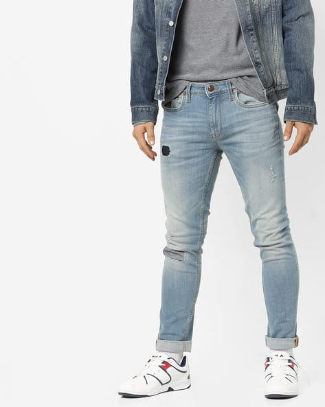
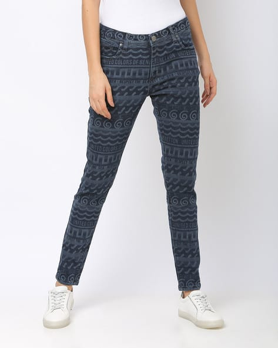
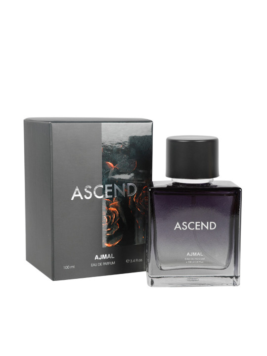
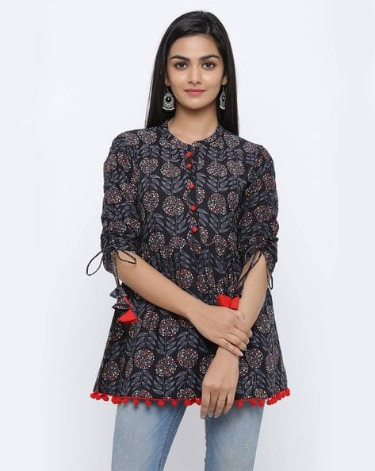

This week's video kit
Week of 2026-11-16. Make one video a day in Gemini. Upload it with the button and it goes out on Instagram at 7 PM with the caption. Videos uploaded after 7 PM go out the next evening.
1. Jeans Outfit for Men Skinny Washed Jeans · ₹3,899 on AJIO

1 · Save this photo (long-press), open Gemini → Video, attach it and paste the prompt:
2 · Download the video, then upload it here. It posts to Instagram at 7 PM with this caption:
Upload video for #1Caption
2. Jeans Outfit for Men Lightly Washed Jeans · ₹3,799 on AJIO

1 · Save this photo (long-press), open Gemini → Video, attach it and paste the prompt:
2 · Download the video, then upload it here. It posts to Instagram at 7 PM with this caption:
Upload video for #2Caption
3. Watches for Women Gold Analogue Watch · ₹7,497 on Myntra

1 · Save this photo (long-press), open Gemini → Video, attach it and paste the prompt:
2 · Download the video, then upload it here. It posts to Instagram at 7 PM with this caption:
Upload video for #3Caption
4. Watches for Women Black Analogue Watch · ₹3,475 on Myntra

1 · Save this photo (long-press), open Gemini → Video, attach it and paste the prompt:
2 · Download the video, then upload it here. It posts to Instagram at 7 PM with this caption:
Upload video for #4Caption
5. Jeans Outfit for Women Skinny Jeans · ₹3,999 on AJIO

1 · Save this photo (long-press), open Gemini → Video, attach it and paste the prompt:
2 · Download the video, then upload it here. It posts to Instagram at 7 PM with this caption:
Upload video for #5Caption
6. Jeans Outfit for Women Washed Wide Jeans · ₹3,799 on AJIO

1 · Save this photo (long-press), open Gemini → Video, attach it and paste the prompt:
2 · Download the video, then upload it here. It posts to Instagram at 7 PM with this caption:
Upload video for #6Caption
7. Sunglasses for Women Full-Rim Cat-Eye Sunglasses · ₹2,199 on AJIO

1 · Save this photo (long-press), open Gemini → Video, attach it and paste the prompt:
2 · Download the video, then upload it here. It posts to Instagram at 7 PM with this caption:
Upload video for #7Caption
8. Sunglasses for Women UV-Protected Full-Rim Cat-Eye Sunglasses · ₹1,699 on AJIO

1 · Save this photo (long-press), open Gemini → Video, attach it and paste the prompt:
2 · Download the video, then upload it here. It posts to Instagram at 7 PM with this caption:
Upload video for #8Caption
9. Perfumes for Women Ascend Eau De Parfum · ₹735 on Myntra

1 · Save this photo (long-press), open Gemini → Video, attach it and paste the prompt:
2 · Download the video, then upload it here. It posts to Instagram at 7 PM with this caption:
Upload video for #9Caption
10. Perfumes for Women Eau De Parfum · ₹548 on Myntra

1 · Save this photo (long-press), open Gemini → Video, attach it and paste the prompt:
2 · Download the video, then upload it here. It posts to Instagram at 7 PM with this caption:
Upload video for #10Caption
11. Tops for Women Stylish White Self Shirt · ₹1,954 on Myntra

1 · Save this photo (long-press), open Gemini → Video, attach it and paste the prompt:
2 · Download the video, then upload it here. It posts to Instagram at 7 PM with this caption:
Upload video for #11Caption
12. Tops for Women Stylish Floral Tunic · ₹360 on AJIO

1 · Save this photo (long-press), open Gemini → Video, attach it and paste the prompt:
2 · Download the video, then upload it here. It posts to Instagram at 7 PM with this caption:
Upload video for #12